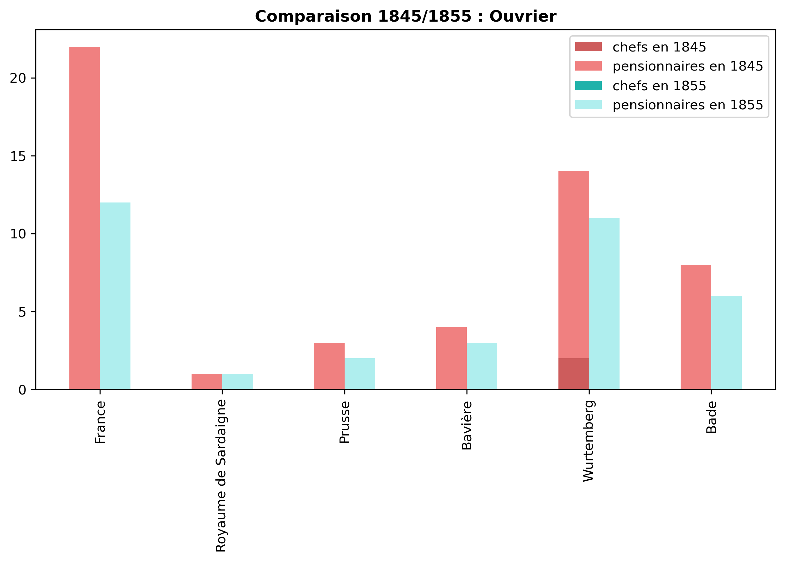
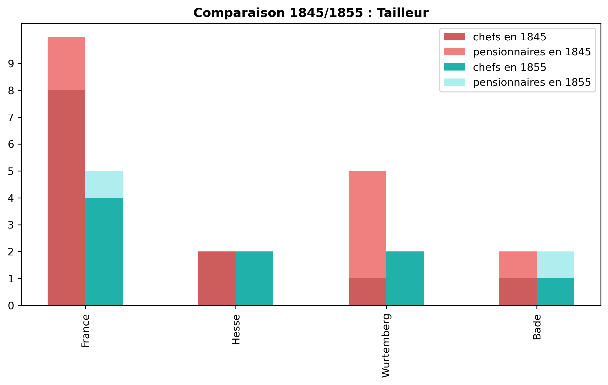
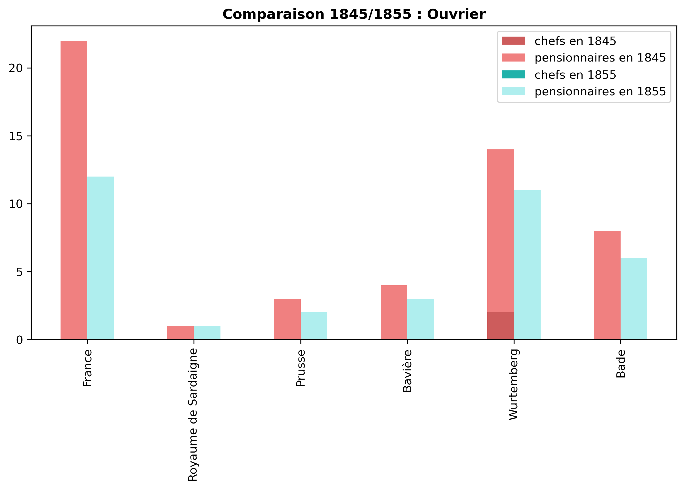
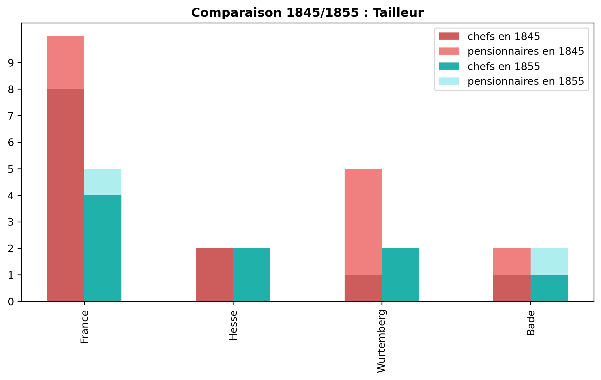

En 1845, on ne recense aucune vocation liée au chemin de fer.
En 1855, on recense deux ingénieurs en chemin de fer ainsi que deux employés de chemin de fer du Royaume-Uni. De plus, on rencontre un ouvrier maçon au chemin de fer de France.
Parmi les activités qui apparaissent et se développent durant le XIXe siècle,
le chemin de fer occupe une place de choix.
En effet, entre les recensements de 1845 et 1855,
outre la création de l'Etat fédéral,
la Suisse se dote et développe son réseau et ses infrastructures ferroviaires.1
Ici encore, les chiffres ne sont pas très élevés : un ouvrier du chemin de fer,
un ouvrier maçon, deux ingénieurs et deux employés dans spécification. En revanche, ce qui est intéressant de noter,
c'est la présence de deux Français parmi les emplois les moins bien qualifiés.
Le ingénieurs et employés sont, quant à eux, anglais.
On peut donc supposer que le Royaume-uni commence peu à peu à exporter son savoir-faire technique à travers l'Europe.
- Arlettaz et Arlettaz, p. 40
En 1855, on recense un gypseur de France, un d'Italie ainsi que trois du Royaume de sardaigne.
En 1845, on recense un musicien de Tchéquie, un artiste de Lombardie-Vénétie et un marchand de musique de Bavière.
En 1855, on recense deux pianistes de Bade et Holstein ainsi qu'un luthier et un musicien de France.
 


